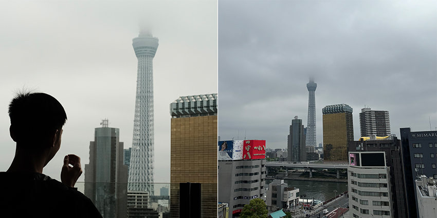
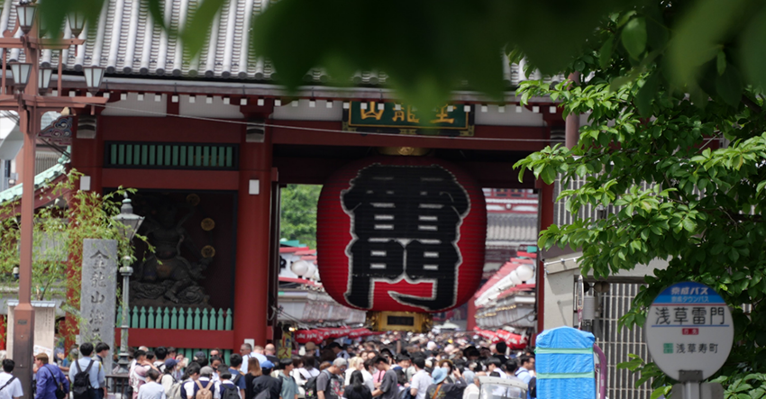
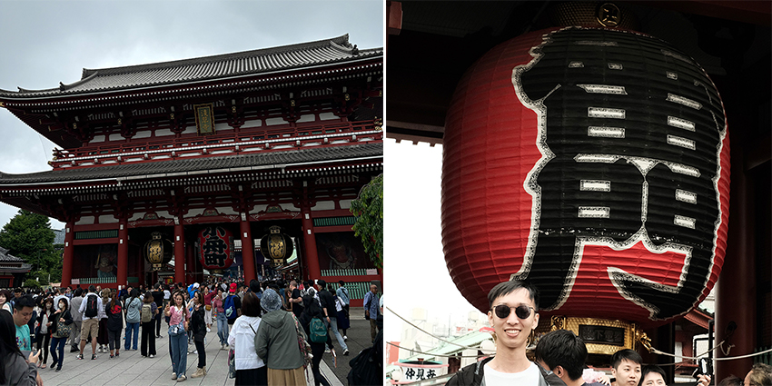
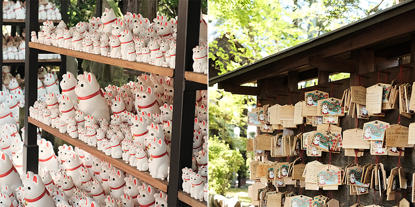
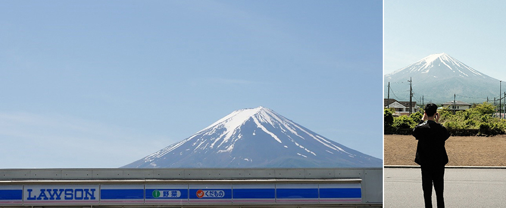
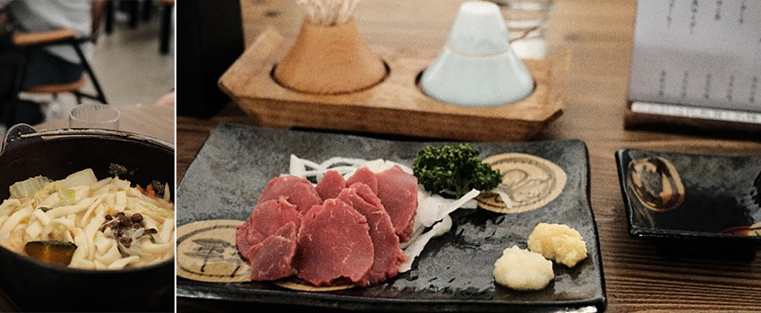
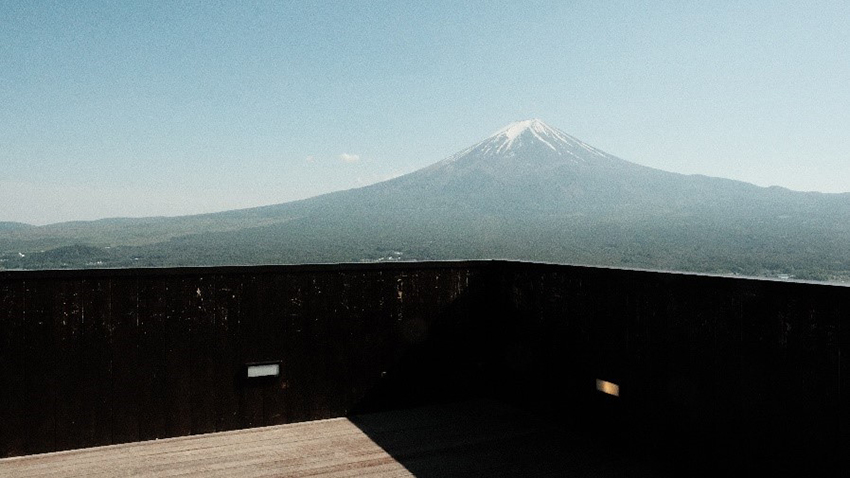
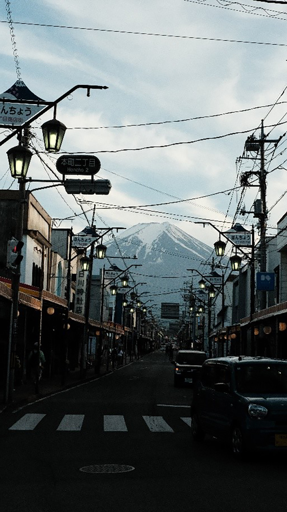
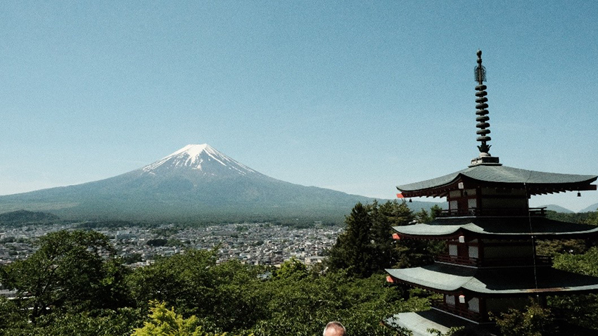
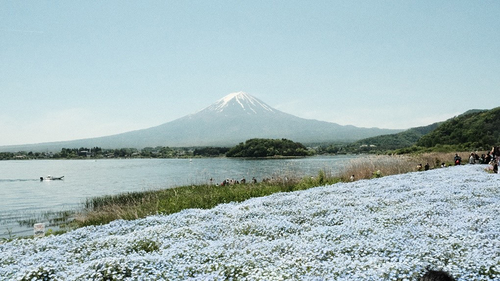

趁今年專案開始前安排個日本東京小旅行，只有短短的四天三夜，雖然實際上可能真正旅遊的時間只有三天，但已讓東京的美盡收眼裡，記憶猶存。
因為旅行時間短暫，所以只能找幾個想去的景點造訪，當然包含了：晴空塔、淺草寺、豪德寺以及不能錯過的富士山河口湖，第一站就從晴空塔，因為這次住宿地點剛好在附近，可惜的是天空總是不作美，每當想要拿起相機拍晴空塔的時候，總被一層層的雲給蓋住，但朦朧的畫面也是別有勝收。
|  |
👉東京歷史最悠久的寺廟－淺草寺
看完晴空塔的朦朧美後，當然就是來到鄰近的雷門淺草寺，跟同事趁著早上商店都還沒開，想說人潮會不會少一點，但錯了!!人潮已經滿出來了，因淺草寺被稱為東京最古老寺廟，想當然人潮是滿滿，來東京一定要來朝聖。而要到淺草寺，先看到的是日本東京最強地標之一，巨大雷門燈籠，它是通往東京最古老寺院的入口，想在這裡拍張照可不容易，因為人山人海沒有空閒之餘，但看到大家滿滿的笑容，就知道自己來對地方。
|  |
之前，就有朋友跟我說過，傳說淺草寺籤非常靈驗，一次100日圓，很多旅客都會來此求籤開示。朋友也跟我說淺草寺抽到兇的機會很高，如果抽中也別太在意，就掛在寺廟鐵桿上，便不會跟著你回家了。
|  |
👉豪德寺招財貓
豪德寺也是此次行程期待已久的，之前就在IG上面常看到有人把招財貓拍得美美的，招福殿後方就是有名的招財貓奉納所，上千隻招財貓排排站，畫面十分可愛，然而這些招財貓都代表著願望達成，來到《豪德寺》參拜祈願的人，通常都會買一隻招財貓回家供奉，當所許的願望達成時，會把原本那隻招財貓帶回來這裡還願，然後再買一隻更大的回去，這裡擺放的上千隻招財貓，代表了多少願望的成真。只可惜，當我跟同事要買招財貓時，已經超過下午三點，寺務所已經結束營業，沒有買到招財貓，有點遺憾。
|  |
行程最期待的景點就是富士山了，新冠疫情正式解封後，國際旅遊熱度回升，想當然富士山的人潮也是人山人海，然而在富士河口湖町的一家超商，因景色與富士山交疊，在網路上瘋傳後成為打卡熱點，湧入外國遊客前往拍照，嚴重破壞社區生活，不久前也傳說要用黑布封起來，幸運的是，在我們去完幾天後，新聞就報導證實已經用黑布封起來了，但其實在每個小角落都可以發現富士山的美，只要隨手拿起相機，都可以拍出動人的照片。
|  |
這次來富士山，我跟同事們選擇租車，雖然在台灣有著開車的經驗，但因為日本是右駕，所以幾乎車上的設備都是跟台灣的相反，之前在網路上看到別人分享在日本開車很容易打到雨刷，還想說怎麼可能，結果實際經歷了才知道真的是這樣，一鬆懈就會把方向燈打成雨刷，在路上也看到很多空打雨刷的車子，就知道其實我不孤單。
除了欣賞富士山美景之外，當然也要因地制宜，體驗一下當地的鄉土料理「餺飥」和「生馬肉（馬刺）」，「餺飥」主要以小麥粉揉製出比烏龍更粗的麵條，加上味噌以及大量蔬菜，「生馬肉」剛開始聽到有點害怕，但實際吃了覺得口感上蠻像生魚片的，也推翻自己的想像，從體驗當地美食更能了解當地的文化。
|  |
更幸運的是，到達富士山的這幾天天氣都很好，兩天都可以很清楚的看到滿滿的富士山，趁著天空作美當然要多跑幾個點來欣賞不同角度的富士山。
|  |
| 天山上公園：體驗了當地的纜車，用較高的視角去欣賞它，沒有任何遮蔽物擋住的富士山，更為壯觀。 |
|  |
| 日川時計店:走在街道上，看著路盡頭的富士山，真是一件奢侈的事情。 |
|  |
| 新倉富士淺間神社：這是一個在櫻花季或者是楓葉季，必須來朝聖的地方，雖然需要爬上400階梯，但大家為了這片美景爬上去都值得了。 |
|  |
| 大石公園：它就位於河口湖旁邊，在這片花海的襯托下，富士山變得更為迷人了。 |
雖然很多景點坐公車都可以到達，但租車的話，時間比較好掌握，日本停車也非常方便，基本上每個景點旁就會有停車場，然後最值得讚許的事是，停車場基本上都不收停車費的，所以也不用擔心到達景點後停車收費問題，如果有來富士山也推薦在一定要在當地住一晚，感受在地日本鄉村的感覺，晚上夜深人靜，如此舒服。